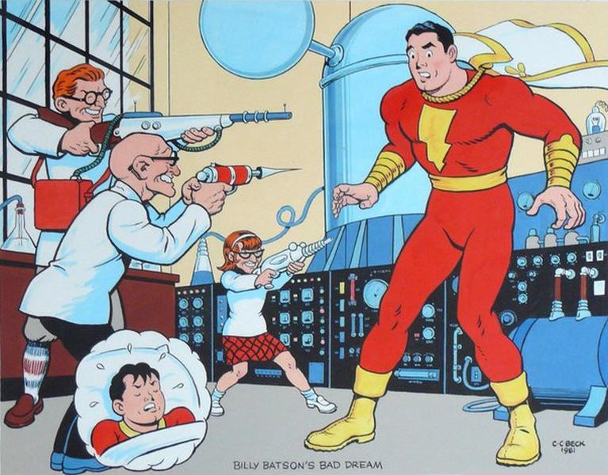
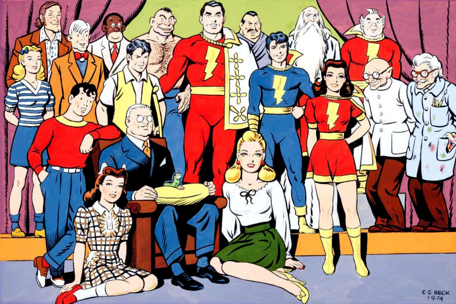

Charles Clarence Beck (June 8, 1910 – November 22, 1989), usually cited as C. C. Beck, was an American cartoonist and comic book artist, best known for his work on Captain Marvel at Fawcett Comics and DC Comics.
He was inducted into the comic book industry's Will Eisner Comic Book Hall of Fame in 1993 and the Jack Kirby Hall of Fame in 1997.
In 1933, Beck joined Fawcett Publications as a staff artist, where he created pulp magazines. When the company began producing comic books in autumn 1939, Beck was assigned to draw a character created by writer Bill Parker called "Captain Thunder". Before the first issue of Whiz Comics came out, the character's name was changed to Captain Marvel. Besides Captain Marvel, Beck also drew other Fawcett series, including the adventures of Spy Smasher and Ibis the Invincible.
 